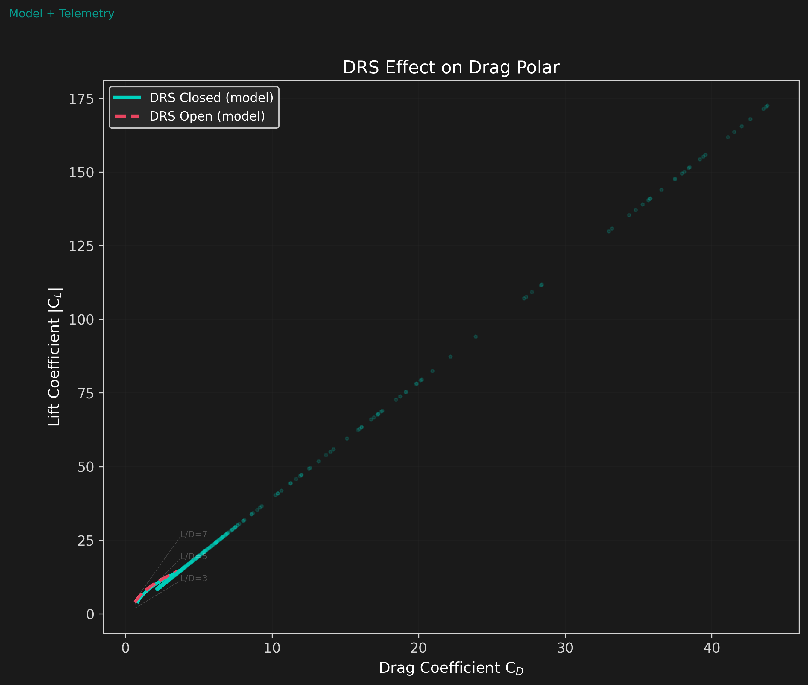
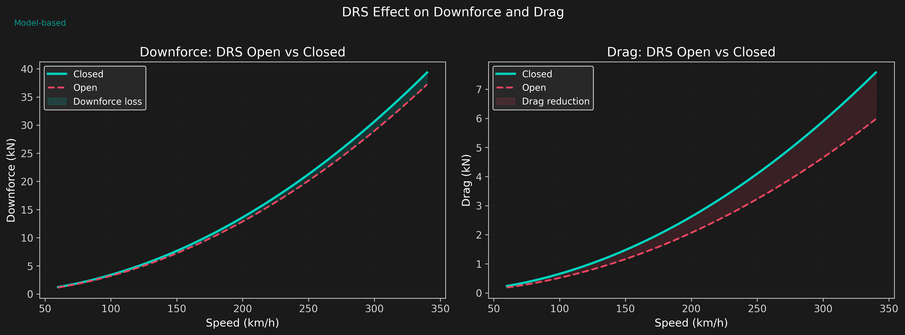
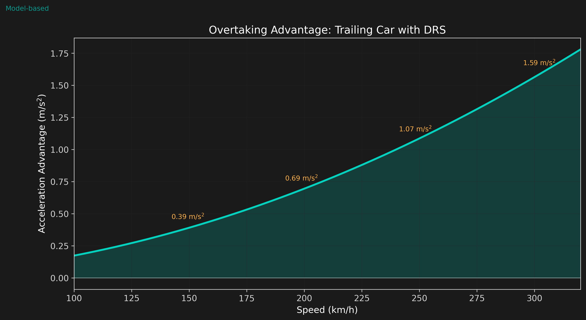
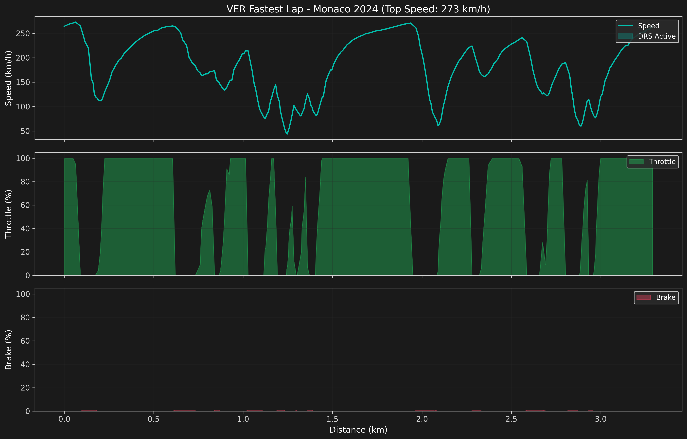
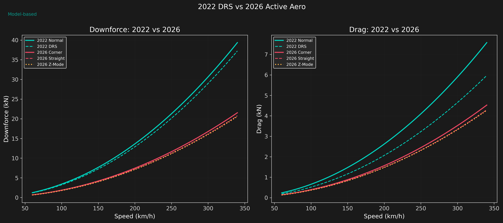

DRS & Active Aero
How DRS Works
The Drag Reduction System (DRS) opens the rear wing's main flap to reduce drag on straights. When closed, the rear wing operates at high incidence for maximum downforce. When opened, the flap angle reduces, decreasing both downforce and drag.
The drag reduction from DRS is modeled as:
where \(R_{DRS} \approx 0.70\) is the drag reduction fraction and \(L_{DRS} \approx 0.40\) is the downforce loss fraction. The 2026 regulations replace DRS with active aero systems that provide multiple operating modes.
DRS Drag Polar
The drag polar shifts when DRS opens. The operating point moves to a lower CL (less downforce) and lower CD (less drag) region of the polar curve.

Downforce and Drag Delta

Overtaking Advantage
The trailing car with DRS open experiences less drag than the leading car, creating a thrust surplus that accelerates it forward. This is the fundamental mechanism that enables overtaking in modern F1.

This model assumes equal engine power -- the advantage shown is purely aerodynamic. In reality, the trailing car also benefits from slipstream (reduced pressure drag in the leader's wake), adding another 10--20% to the advantage.
Telemetry Trace -- Monaco 2024
Real telemetry data from Verstappen's fastest lap at Monaco 2024 shows DRS activation zones. Monaco has a short DRS zone on the start-finish straight, giving only a brief overtaking window.

2022 DRS vs 2026 Active Aero
The 2026 regulations introduce active front and rear aerodynamics with three distinct modes:
- Corner mode: Maximum downforce configuration for cornering grip
- Straight mode: Low-drag configuration (always active on straights, not just in detection zones)
- Z-mode: Overtaking boost: minimum drag + maximum electric power deployment

The 2026 regulations aim to reduce the "dirty air" problem by cutting total downforce by ~30% and shifting the generation toward the floor (less sensitive to wake). The active aero system allows teams to optimize the drag-downforce tradeoff on a per-corner basis rather than the current DRS-zone-only approach.
Key Findings
- DRS efficiency: ~70% drag reduction from the rear wing comes at a cost of ~40% downforce loss. The net L/D penalty is ~40%, making DRS only beneficial on straights.
- Overtaking advantage: Pure aero advantage of 0.7--1.5 m/s^2 at racing speeds, amplified by slipstream effects in practice.
- Speed-dependent: DRS advantage scales with v^2, making it increasingly effective at higher speeds.
- 2026 shift: Active aero provides continuous optimization rather than binary on/off, with Z-mode delivering a targeted overtaking boost.
- Monaco constraint: Short DRS zone and low speeds limit DRS effectiveness on street circuits, making track position critical.
Limitations
- Engine power is modeled as equal for both cars -- real overtaking involves power unit deployment and energy recovery differences.
- Slipstream draft effect (pressure reduction in the leader's wake) is not modeled separately from DRS.
- 2026 active aero model is based on proposed regulation targets, not actual team data or finalized rules.
- Tire temperature and degradation effects of following another car are not included.
- The Z-mode battery deployment strategy is simplified -- real energy management is highly complex.
- Monaco telemetry is circuit-specific; DRS effectiveness varies significantly by track.